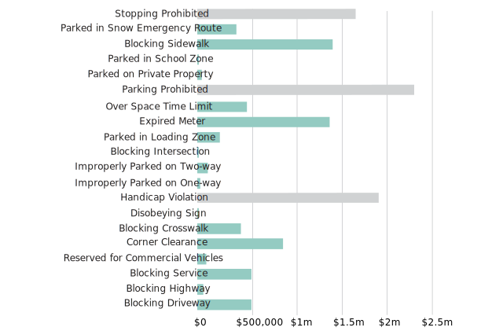
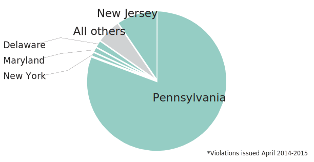

If there is anything I have learned from working with this seemingly-endless Philadelphia parking violation data, it's that Philly issues thousands and thousands of them per year. The spreadsheet, which includes three years worth of tickets from 2012-2015, has about one million ticket entries. I decided to specifically look at the most recent data for a full year, violations issued April 2014-April 2015, which has almost 300,000 violations.
The Center City West zip code 19103 overwhelmingly had the highest number of violations of 49 zip codes in the City, taking up about 16 percent of violations for the year while all other zips ranged from 1-6 percent. 19103 includes Rittenhouse Square, and the commercial parts of Walnut, Chestnut, Sansom and Spruce streets, which tend to be active places areas of the city, and especially hard to park in.
The second most violation-heavy zip at 6 percent was 19148, which is Southeast Philadelphia, including the east side of Oregon Ave and the stadiums. Stadium-goers who are sick of paying $20 to park at the Linc could be looking for alternative places to park, and failing to find legal ones. Also, these two zip codes are likely the most tourist-heavy areas in the city. Visitors are often not familiar with parking laws or struggle to find legal parking and aren't aware how strict police and the Philadelphia Parking Authority are with enforcing parking laws - parking in the city is an acquired skill.
Parking tickets are issued with a description of the violation, which also determines the price of the ticket. The average fine for violations like parking in a prohibited area or blocking a driveway or service costs around $40-$50. An expired meter is around $30, while parking in a handicap or spot without the proper tag is a $300 fine.
Looking only at violations that have to do with particular spaces on Philly streets - excluding violations like expired registrations or repeat offenses - these alone summed to a $11.7 million payout to the City of Philadelphia. The top money-making violations are stopping or parking in a prohibited area ($2.3 and $1.7 million, respectively) and fines regarding handicap spaces or blocking ramps ($1.8 million). But these are just a fraction of all the tickets issued; the other 25 percent of violations are more conerned with a specific individual's automobile information rather than the space they are in.
Which out-of-staters are most ticketed other than those with Pennsylvania tags? The answer is fairly expected: New Jersey, Delaware, New York and Maryland residents are the most ticketed besides Pennsylvanians, who account for 80 percent of violations. New Jersey had 9.5 percent of violations, Delaware was 1.7 percent and New York and Maryland both had one percent. These are all Pennsylvania's neighboring states on the east coast, and two are part of the tri-state area. All other states combined had 5.8 percent, and there were a couple Canadian and international plates.
Total fine collection by violation
Number of violations per plate state
{kind=link}